086 — Terraform: HCL, providers, resources y grafo
Parte: 07 — Infraestructura como código y configuración
Nivel: intermedio-avanzado · Horas estimadas: 4
Laboratorio: iac · Estado: EXECUTABLE_CORE
🎯 Propósito
Escribir Terraform entendiendo la pieza que decide su comportamiento y que casi nadie mira: el grafo. El orden de ejecución no lo da el fichero ni el orden de las declaraciones, lo dan las referencias entre recursos — y de ahí salen los tres problemas característicos: dependencias que existen y no se pueden expresar con una referencia, ciclos que aparecen al refactorizar, y recursos que no se pueden sustituir en el sitio. La clase 085 dejó además una deuda concreta —qué hacer con los campos que gestiona otro sistema— y aquí está el mecanismo.
📚 Resultados de aprendizaje
Al finalizar podrás:
- Leer un conjunto de ficheros como un grafo y predecir en qué orden se aplicará.
- Distinguir una dependencia expresable por referencia de una que exige declararla.
- Elegir el comportamiento de sustitución adecuado para un recurso que no se puede reemplazar en el sitio.
- Ignorar los campos que gestiona otro sistema, cerrando la deuda de la clase 085.
- Configurar proveedores con versiones fijadas y con alias para varias regiones o cuentas.
🧩 Conceptos centrales
| Concepto | Comprensión verificable |
|---|---|
grafo de dependencias |
Estructura que Terraform construye a partir de las referencias entre recursos. Decide el orden y el paralelismo; el orden de los ficheros es irrelevante. |
dependencia implícita |
La que nace de referenciar un atributo de otro recurso. Es la forma correcta: se declara sola y no hay que mantenerla. |
dependencia explícita |
La que se declara a mano porque no hay ninguna referencia que la exprese. Es un último recurso y casi siempre señala un efecto colateral. |
crear antes de destruir |
Comportamiento que crea el sustituto antes de retirar el original. Imprescindible cuando el recurso no se puede reemplazar en el sitio y algo depende de él. |
ignorar cambios |
Declaración de que un campo lo gestiona otro sistema. Es la respuesta al origen 3 de la desviación de la clase 085. |
alias de proveedor |
Segunda configuración del mismo proveedor, para otra región o cuenta. Se pasa explícitamente a los recursos que la usan. |
🧠 Modelo mental
IaC trata la infraestructura como producto versionado: el plan explica intención, el estado conecta intención y realidad, y la revisión reduce cambios accidentales.
Aplicado a esta clase, separa siempre cuatro planos: intención (qué necesita el usuario), configuración (qué declaramos), estado observado (qué existe de verdad) y evidencia (cómo sabemos que cumple). Confundirlos produce diseños que se ven correctos en un diagrama pero fallan al operar.
🗺️ Flujo de razonamiento

📖 Desarrollo
1. El orden lo da el grafo, no el fichero
Terraform lee todos los ficheros de un directorio como si fueran uno, ignora el orden en que aparecen las declaraciones y construye un grafo a partir de las referencias:
resource "aws_subnet" "app" {
vpc_id = aws_vpc.principal.id # ← esto crea la dependencia
cidr_block = "10.20.4.0/24"
}
resource "aws_vpc" "principal" { # declarado DESPUÉS, se crea ANTES
cidr_block = "10.20.0.0/16"
}
De ahí salen tres consecuencias que conviene interiorizar:
El paralelismo es automático. Lo que no depende de nada se crea a la vez. Por defecto se ejecutan hasta diez operaciones simultáneas, y eso puede chocar con los límites de tasa del proveedor:
Error: Throttling: Rate exceeded
La corrección no es reintentar más: es bajar el paralelismo en las ejecuciones que crean muchos recursos del mismo tipo.
$ terraform apply -parallelism=4 tfplan
Organizar en ficheros es solo para las personas. Separar en red.tf, datos.tf y computo.tf no cambia nada del comportamiento; es legibilidad. Y por eso una convención sencilla vale más que una elaborada:
main.tf los recursos
variables.tf las entradas
outputs.tf las salidas
versions.tf proveedores y sus versiones
Ver el grafo ayuda cuando algo no cuadra:
$ terraform graph -type=plan | dot -Tsvg > grafo.svg
Y hay un caso en que hace falta mirarlo: los ciclos. Aparecen al refactorizar, cuando dos recursos acaban referenciándose mutuamente:
Error: Cycle: aws_security_group.app, aws_security_group.bd
Ocurre con reglas de cortafuegos que se referencian entre sí, y la solución es sacar las reglas a recursos independientes:
# en vez de reglas dentro de cada grupo, que se referencian mutuamente
resource "aws_vpc_security_group_ingress_rule" "bd_desde_app" {
security_group_id = aws_security_group.bd.id
referenced_security_group_id = aws_security_group.app.id
from_port = 5432
to_port = 5432
ip_protocol = "tcp"
}
Es el mismo patrón que la clase 047 exigía para los recursos hijo: una sola forma de declararlos, y separada del padre cuando la relación es cruzada.
2. Cuando la dependencia existe y no se puede referenciar
La dependencia implícita es la buena: nace sola de una referencia y no hay que mantenerla. La explícita es un último recurso, y conviene saber cuándo hace falta de verdad.
El caso canónico es el efecto colateral: el recurso A necesita que B exista, pero no usa ningún atributo suyo.
resource "aws_iam_role_policy_attachment" "lectura" {
role = aws_iam_role.app.name
policy_arn = aws_iam_policy.lectura.arn
}
resource "aws_lambda_function" "procesar" {
role = aws_iam_role.app.arn # depende del ROL, no del permiso
# …
depends_on = [aws_iam_role_policy_attachment.lectura]
}
Sin esa declaración, la función se crea antes de que el permiso esté asociado. Y el síntoma es característico y desespera: funciona unas veces y otras no, porque depende de qué operación termine antes.
Y hay una segunda causa que produce el mismo síntoma y no se arregla con dependencias: la propagación. Un permiso creado hace un segundo puede no estar visible todavía para el servicio que lo usa. Ahí no hay orden que valga, y las salidas son otras:
reintento en el propio proveedor muchos lo hacen; conviene comprobar si lo hace
una espera declarada fea y a veces la única
dos ejecuciones la segunda funciona: es la señal de
que el problema es de propagación
La última línea es un diagnóstico útil: si volver a aplicar sin cambiar nada arregla el error, el problema es de propagación y no de grafo.
Y el mal uso más común de las dependencias explícitas es ponerlas «por si acaso»:
depends_on = [aws_vpc.principal, aws_subnet.app, aws_security_group.bd]
Eso añade aristas que el grafo ya tenía, reduce el paralelismo y oculta las dependencias reales. La regla es escribirla solo cuando se puede explicar por qué no hay referencia posible, y dejar un comentario que lo diga.
Y un caso especial que conviene conocer porque produce ejecuciones lentísimas: usar una dependencia explícita sobre un módulo entero. Eso hace que todo lo del módulo espere a todo lo del otro, y en módulos grandes convierte una aplicación paralela en una secuencial:
module "aplicacion" {
source = "./modulos/aplicacion"
depends_on = [module.red] # ← todo espera a todo
}
La alternativa es pasar los valores concretos que la aplicación necesita de la red, con lo que la dependencia se vuelve implícita y solo afecta a los recursos que de verdad la tienen.
3. Los cuatro comportamientos de ciclo de vida
El bloque de ciclo de vida cambia cómo se sustituye o se protege un recurso, y sus cuatro opciones responden a problemas distintos.
Crear antes de destruir. Por defecto, un recurso que hay que sustituir se destruye y luego se crea. Para lo que sirve tráfico o lo que otros referencian, eso es un corte:
resource "aws_launch_template" "app" {
# …
lifecycle {
create_before_destroy = true
}
}
Y tiene una condición que produce errores al activarlo: durante la sustitución existen los dos a la vez, así que cualquier restricción de unicidad falla. Nombres, direcciones fijas, puertos reservados:
Error: name already exists
La corrección es que el nombre lo genere el proveedor o que lleve un sufijo derivado del contenido:
name_prefix = "app-" # en vez de name = "app"
Impedir la destrucción. Hace fallar la planificación si algo propondría borrar ese recurso:
lifecycle {
prevent_destroy = true
}
Es la protección de la clase 059 y tiene una particularidad: el error aparece en el plan, antes de ejecutar nada, lo que la hace mejor que una protección del proveedor para detectar el problema pronto. Las dos son complementarias, y la clase 059 ya pedía ambas.
Ignorar cambios. Es la respuesta a la deuda que dejó la clase 085 — el origen 3 de la desviación, otro sistema gestionando el mismo campo:
resource "aws_autoscaling_group" "app" {
desired_capacity = 3
# …
lifecycle {
ignore_changes = [desired_capacity] # lo gestiona el escalado automático
}
}
Con eso, el valor inicial lo pone la plantilla y las modificaciones posteriores del otro sistema no producen ruido. Es exactamente la frontera de propiedad que la clase 085 pedía declarar, y conviene acompañarla de un comentario que diga quién es el dueño, porque dentro de un año nadie se acordará.
Y su versión total, para recursos cuyo contenido gestiona otro por completo:
ignore_changes = all
Que hay que usar con cuidado: a partir de ahí, la plantilla solo controla la existencia del recurso, no su configuración.
Sustituir cuando cambie otra cosa. Fuerza la recreación al cambiar un recurso del que no se depende por atributo:
resource "aws_instance" "app" {
# …
lifecycle {
replace_triggered_by = [terraform_data.version_config]
}
}
Es el equivalente de la anotación con huella de la clase 076: un cambio en algo externo debe producir un reemplazo, y sin esto no lo produce.
Y una advertencia sobre los aprovisionadores —ejecutar órdenes tras crear un recurso—: son código imperativo dentro de un sistema declarativo, no son idempotentes, no se reintentan bien y si fallan dejan el recurso marcado como contaminado. La documentación oficial los describe como último recurso y conviene tomárselo literalmente:
en vez de un aprovisionador que instala software
→ una imagen construida antes (clases 062, 094)
en vez de un aprovisionador que registra algo
→ un recurso del proveedor que lo haga, o datos de arranque
en vez de un aprovisionador que espera
→ comprobar por qué hace falta esperar
4. Proveedores: versiones, alias y lo que aportan
Un proveedor es un complemento que traduce las declaraciones a llamadas de una API. Y su configuración tiene dos partes que conviene no mezclar:
terraform {
required_version = "~> 1.9"
required_providers {
aws = {
source = "hashicorp/aws"
version = "~> 5.70" # QUÉ versión
}
}
}
provider "aws" {
region = var.region # CÓMO se configura
}
La primera va siempre en el módulo raíz y se fija, por lo mismo que la clase 059 exigía: dos ejecuciones del mismo código en semanas distintas deben usar el mismo proveedor. Y el fichero de bloqueo se versiona en el repositorio:
$ terraform providers lock -platform=linux_amd64 -platform=darwin_arm64
Esa orden merece conocerse porque evita un fallo típico: el fichero de bloqueo generado en un portátil no incluye las huellas para la plataforma del agente de la canalización, y la ejecución falla ahí.
Los alias permiten varias configuraciones del mismo proveedor:
provider "aws" {
region = "eu-west-1"
}
provider "aws" {
alias = "us"
region = "us-east-1"
}
resource "aws_s3_bucket" "replica" {
provider = aws.us
bucket = "cls-replica"
}
Y su uso más frecuente no es multirregión sino multicuenta: un proveedor por cuenta, cada uno asumiendo un rol distinto, que es el patrón de la clase 025 aplicado aquí. Con la advertencia de la clase 059: la identidad se obtiene por federación, sin claves.
Y los módulos reciben proveedores explícitamente cuando usan alias:
module "replica" {
source = "./modulos/bucket"
providers = { aws = aws.us }
}
Una nota sobre lo que conviene no hacer: configurar proveedores dentro de un módulo reutilizable. Impide usar alias desde fuera y complica su composición; la clase 088 lo desarrolla.
Y las fuentes de datos, que son la otra mitad del modelo:
data "aws_vpc" "principal" {
tags = { Name = "vpc-cloudshop" }
}
Leen algo que existe y que gestiona otro. Su ventaja sobre pasar identificadores como variables es que no se rompen cuando algo cambia de nombre, y su riesgo es que una consulta que no encuentra nada —o que encuentra varias cosas— falla la planificación entera:
Error: multiple VPCs matched; use additional constraints
Por eso conviene que los filtros sean exactos, y para lo que de verdad es un contrato entre equipos, la clase 088 propone una alternativa mejor que buscar por etiquetas.
5. Leer una plantilla como se lee código
Con el grafo y el ciclo de vida claros, hay una lista corta que detecta la mayoría de los problemas al revisar un cambio:
☐ ¿las dependencias son implícitas? toda declaración explícita, justificada
☐ ¿hay recursos con nombre fijo que también tienen crear antes de destruir?
☐ ¿los campos que gestiona otro sistema están declarados como ignorados,
con un comentario que diga quién es el dueño?
☐ ¿los recursos que no se pueden perder tienen protección contra destrucción?
☐ ¿las versiones de proveedor están fijadas y el fichero de bloqueo versionado?
☐ ¿hay aprovisionadores? cada uno, justificado
☐ ¿las fuentes de datos filtran de forma que solo puedan devolver una cosa?
Y dos comprobaciones automáticas que valen más que la lista:
# 1. el plan de una ejecución sin cambios debe estar vacío (clase 085)
$ terraform plan -detailed-exitcode
# 0 = sin cambios · 2 = hay cambios · 1 = error
# 2. ningún recurso se destruye sin que alguien lo haya leído
$ terraform show -json tfplan | jq -r '.resource_changes[]
| select(.change.actions | index("delete")) | .address'
La primera es la comprobación de idempotencia de la clase 085 en su forma ejecutable, y debería estar en la canalización: si aplicar dos veces seguidas produce cambios, algo está mal declarado.
Y una lectura del plan que ahorra sustos: los cuatro símbolos y lo que implican.
+ crear sin riesgo salvo por el coste
~ modificar en el sitio sin corte, normalmente
-/+ destruir y crear HAY CORTE, salvo con crear antes de destruir
+/- crear y destruir con crear antes de destruir activado
- destruir lo que hay que leer siempre
La tercera línea es la que hay que buscar primero en cualquier plan, porque es donde están las sorpresas: un cambio de un campo que obliga a recrear. Y el plan dice cuál:
~ resource "aws_db_instance" "pedidos" {
~ availability_zone = "eu-west-1a" -> "eu-west-1b" # forces replacement
Ese comentario al final de la línea es la información más importante de un plan, y es la que la revisión tiene que buscar. Un recurso con datos marcado para recreación es un incidente que todavía no ha ocurrido, y la protección contra destrucción de la clase 059 lo convierte en un error de planificación en vez de en una pérdida.
🔬 Ejemplo trabajado
CloudShop reescribe sus plantillas después del inventario de la clase 085. Los cuatro problemas del primer mes son todos del grafo o del ciclo de vida, y ninguno se resuelve leyendo la documentación del recurso.
Problema 1 — el despliegue funcionaba tres de cada cinco veces.
Error: AccessDenied: User is not authorized to perform: s3:GetObject
El error aparecía al crear la función y desaparecía al volver a aplicar sin cambiar nada, lo que es el diagnóstico de propagación de esta clase. Pero había además un problema de grafo:
$ terraform graph -type=plan | grep -c 'aws_iam_role_policy_attachment.*aws_lambda_function'
0 ← no hay ninguna arista entre el permiso y la función
La función referenciaba el rol, no el permiso, así que el grafo permitía crearlos en paralelo.
```text antes después dependencia permiso → función inexistente declarada explícitamente ejecuciones que fallaban 2 de 5 0 comentario que la justifica no había "no hay atributo del permiso que la función use"
**Problema 2 — un ciclo al separar las reglas de cortafuegos.**
```text
Error: Cycle: aws_security_group.app, aws_security_group.bd
Cada grupo declaraba dentro sus reglas, y una de ellas referenciaba al otro grupo. Es el mismo patrón que la clase 047 encontró con las reglas en línea frente a los recursos hijo, ahora con otra herramienta.
```text antes después reglas dentro de cada grupo recursos independientes ciclos en el grafo 1 0 convención documentada no sí, una sola forma
**Problema 3 — la sustitución de una plantilla de arranque cortaba el servicio.**
```text
-/+ resource "aws_launch_template" "app" # forces replacement
Al activar crear antes de destruir, el error cambió:
Error: InvalidLaunchTemplateName.AlreadyExistsException
Los dos existían a la vez durante la sustitución, y el nombre era fijo.
```text antes después nombre fijo ("app") prefijo generado crear antes de destruir no sí corte durante la sustitución 40 s 0
**Problema 4 — la capacidad deseada volvía a tres cada noche.**
El escalado automático subía las instancias durante el día y la aplicación nocturna de la plantilla las devolvía a tres.
```bash
$ terraform plan | grep desired_capacity
~ desired_capacity = 9 -> 3
Es el origen 3 de la desviación de la clase 085 —otro sistema gestiona ese campo— y es el mismo incidente que la clase 081 encontró con los manifiestos y el escalado del clúster. Tercera aparición del mismo conflicto de propiedad.
```text antes después campo desired_capacity declarado ignorado, con comentario que nombra al dueño capacidad al día siguiente de aplicar 3 la que decidió el escalado cambios propuestos en ejecución limpia 1 0
**Y la comprobación que se añadió a la canalización.**
```bash
$ terraform apply tfplan
$ terraform plan -detailed-exitcode
$ [ $? -eq 0 ] || { echo "la plantilla no es idempotente"; exit 1; }
Esa comprobación, ejecutada por primera vez sobre las cuatro carpetas del repositorio, encontró tres plantillas más con campos no declarados:
carpeta cambios en la segunda ejecución causa
red 0 —
datos 2 etiquetas que el proveedor añade
computo 1 campo calculado no declarado
plataforma 4 recurso gestionado por un operador
Las siete diferencias eran ruido y no desviación, exactamente en la proporción que la clase 085 había medido.
Resumen:
```text antes después ejecuciones que fallaban de forma intermitente 2 de 5 0 ciclos en el grafo 1 0 corte al sustituir una plantilla de arranque 40 s 0 cambios propuestos en ejecución limpia 7 0 dependencias explícitas 9 2, ambas justificadas recursos con protección contra destrucción 0 6
**La lección que esta clase traslada al resto de la parte 07**: los cuatro problemas se ven en el grafo o en el plan, y ninguno en la documentación del recurso. La comprobación que los resume es la de la clase 085 en forma ejecutable —**aplicar dos veces seguidas y exigir cero cambios**— y encontró siete diferencias en cuatro carpetas la primera vez que se ejecutó. Es una línea en la canalización y es el único indicador que dice si una plantilla describe la realidad o solo se le parece.
## 🧪 Laboratorio guiado
Ejecuta desde la raíz:
```bash
python classes/part-07-infrastructure-as-code-configuration/086-terraform-hcl-providers-resources-y-grafo/lab.py
El laboratorio selecciona el motor de práctica iac y produce
lab_result.json. El escenario, sus comprobaciones y el artefacto esperado corresponden a
esta clase; no requiere credenciales y deja explícito qué debe revalidarse en un sandbox real.
- Lee
exercise.stepsy formula una predicción antes de ejecutar. - Ejecuta la práctica y verifica todos los elementos de
checks. - Provoca el caso de
negative_testy explica la señal observada. - Materializa
stack-terraformenevidence/usando la plantilla indicada. - Para proveedor real, sigue
sandbox.requires, registra costo y ejecutadestroy.
Evidencia esperada
El artefacto principal es un plan reproducible sin secretos ni cambios inesperados. Además, la entrega debe incluir el comando ejecutado, la salida estructurada y una conclusión que no exceda lo observado.
🏆 Reto verificable
Construye stack-terraform para el caso CloudShop. Incluye una alternativa descartada,
un supuesto que pueda falsarse, una prueba de fallo y una decisión de rollback.
✅ Criterio de aceptación
- [ ]
lab.pytermina con código 0 y genera JSON válido. - [ ] La entrega conecta al menos tres requisitos con mecanismos verificables.
- [ ] Existe una prueba positiva y una prueba negativa con evidencia.
- [ ] Seguridad, costo y operación aparecen como decisiones, no como anexos.
- [ ] Se declara una limitación y una condición que obligaría a revisar el diseño.
- [ ] Otra persona puede repetir el recorrido sin conocimiento tácito.
⚠️ Errores frecuentes
| Síntoma | Causa probable | Corrección |
|---|---|---|
| Una aplicación funciona unas veces y otras no, con errores de permisos | El grafo permite crear en paralelo dos recursos con dependencia real que ninguna referencia expresa | Declara la dependencia explícitamente con un comentario que explique por qué no hay referencia posible. |
| Volver a aplicar sin cambiar nada arregla el error | Es propagación del proveedor, no un problema de orden | Comprueba si el proveedor reintenta; si no, una espera declarada acotada, y documenta el motivo. |
| Aparece un ciclo al refactorizar reglas de red | Dos recursos se referencian mutuamente porque las reglas están dentro de cada uno | Saca las reglas a recursos independientes; una sola forma de declararlas, como en la clase 047. |
| Activar crear antes de destruir produce un error de nombre duplicado | Durante la sustitución existen los dos y el nombre es fijo | Usa prefijo generado o deja que el proveedor asigne el nombre. |
| Un campo vuelve a su valor de la plantilla en cada aplicación | Otro sistema gestiona ese campo: es el origen 3 de la desviación | Decláralo como ignorado y añade un comentario que nombre al dueño. |
| Un plan propone recrear un recurso con datos | Un campo que obliga a reemplazo ha cambiado | Busca el comentario que lo señala en el plan y protege esos recursos contra la destrucción para que el error salte al planificar. |
🛡️ Seguridad, ética y costo
Trabaja con cuentas propias o sandboxes autorizados. No publiques secretos, identificadores reales ni datos personales. Antes de crear recursos pagos define presupuesto, etiquetas y comando de destrucción; después verifica que no queden recursos huérfanos. Los ejemplos locales enseñan contratos, pero no certifican cumplimiento ni disponibilidad de producción.
❓ Preguntas de comprobación
- ¿Qué determina el orden de creación, y por qué el orden de los ficheros es irrelevante?
- ¿Cuándo hace falta una dependencia explícita, y cómo se distingue de un problema de propagación?
- ¿Qué condición hay que cumplir para activar crear antes de destruir sin que falle?
- ¿Cómo se cierra la deuda que la clase 085 dejó sobre los campos que gestiona otro sistema?
- ¿Qué comprobación de una línea dice si una plantilla describe la realidad o solo se le parece?
🔗 Referencias
- HashiCorp (2025). Resource behavior and the dependency graph — dependencias implícitas y explícitas. https://developer.hashicorp.com/terraform/language/resources/behavior
- HashiCorp (2025). The lifecycle meta-argument — crear antes de destruir, ignorar cambios y protecciones. https://developer.hashicorp.com/terraform/language/meta-arguments/lifecycle
- HashiCorp (2025). Provider configuration and aliases — varias configuraciones del mismo proveedor. https://developer.hashicorp.com/terraform/language/providers/configuration
- HashiCorp (2025). Provider requirements and dependency lock file — fijar versiones y plataformas. https://developer.hashicorp.com/terraform/language/files/dependency-lock
- HashiCorp (2025). Provisioners are a last resort — por qué evitarlos y qué usar en su lugar. https://developer.hashicorp.com/terraform/language/resources/provisioners/syntax
- Documentación oficial vigente del servicio implementado; registra URL y fecha de consulta.
📥 Descargar: Parte 07 en PDF · Manual integral